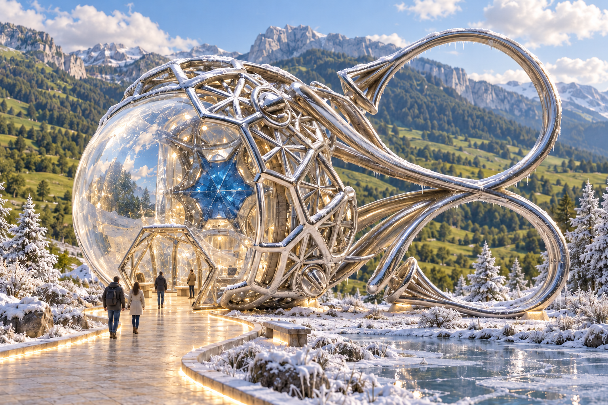
Winter G — approved two-stone eye
Owner approved this image and requested 3D implementation
Generation prompt ↗Livistone · 4 October 2026 · approved Winter concept & 3D study
Winter G below is approved for 3D implementation. The first building study preserves the supplied silver model and adds both stones, a hexagonal iris entrance and an inhabitable room. Earlier studies remain as exploration history. Click an image for the full-size PNG.
The original silver mesh is authoritative. Add the clear outer stone, the smaller blue hexagonal stone behind it, and an operable lower iris. Earlier Winter directions below are superseded.

Owner approved this image and requested 3D implementation
Generation prompt ↗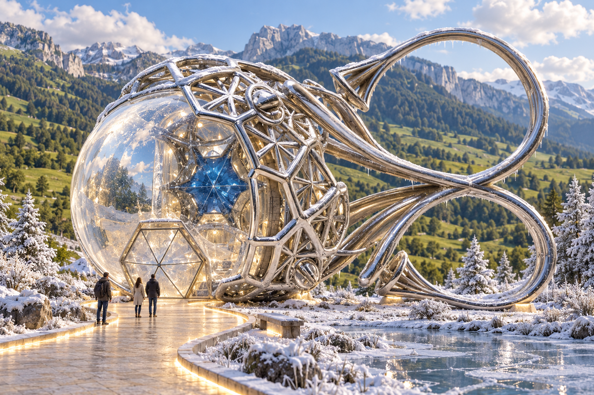
Latest direction: Winter D/E make the blue eye itself a horizontal entrance. Eyelense D/E enlarge the red jewel into an open doorway at ground level. My starting picks are Winter D for the clearest horizontal outline and Eyelense E for the fullest red-bead shape. All remain approved Winter concept & 3D study.
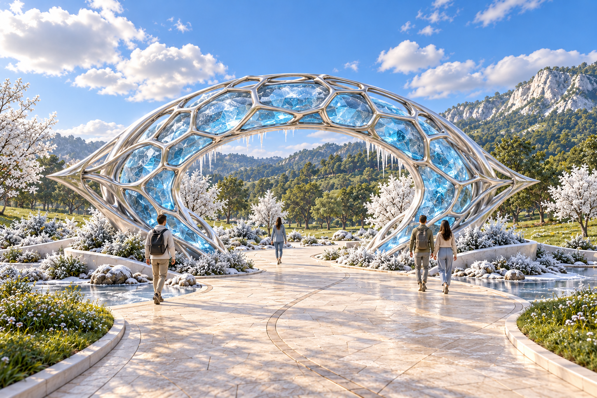
A large horizontal blue eye wrapped in silver honeycomb; the central opening becomes the walking route.
Clearly horizontal silhouette and wide open centre. This explores one passage through the blue eye, replacing the earlier two adjacent ring passages.
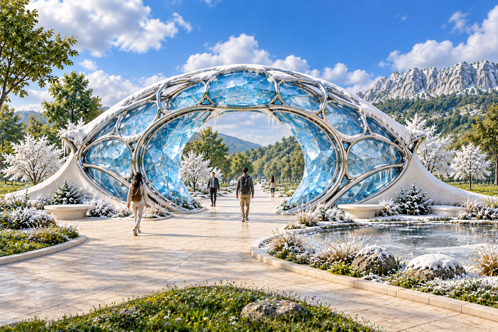
A deeper horizontal topaz surround and short crystal-lined passage, integrated with white masonry wings.
The horizontal outer silhouette is strong, with a narrower rounded inner aperture and visible crystal thickness. A more substantial alternative to D.
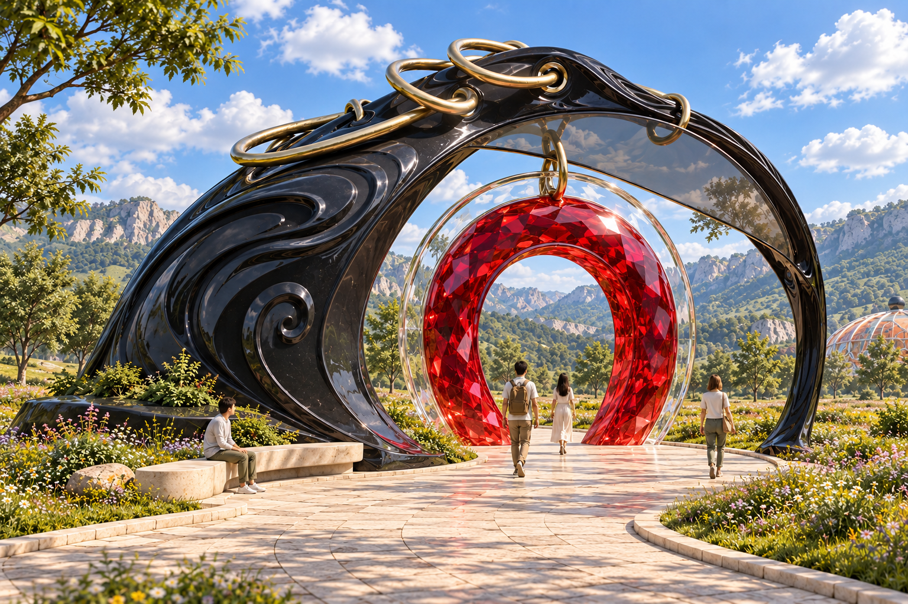
The enlarged red bead becomes a faceted red ring doorway inside the black crescent, with its clear outer glass rim.
The broad red ring makes the doorway unmistakable. Clear outer glass ring and brass crest suspension retain the pendant’s layered motif.
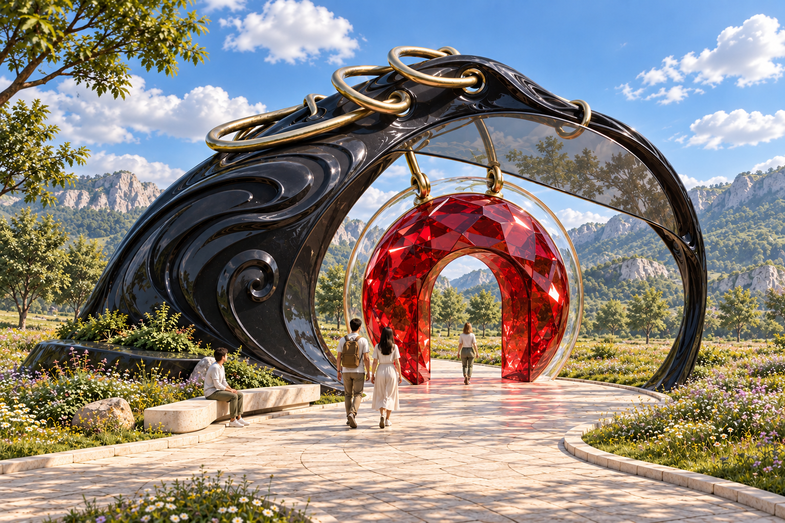
A thicker rounded red jewel with an arched passage through it, preserving more of the original bead’s volume.
Most literal passage through the enlarged red bead: more red body around a narrower arched opening. Confirm desired width and depth in later architectural views.
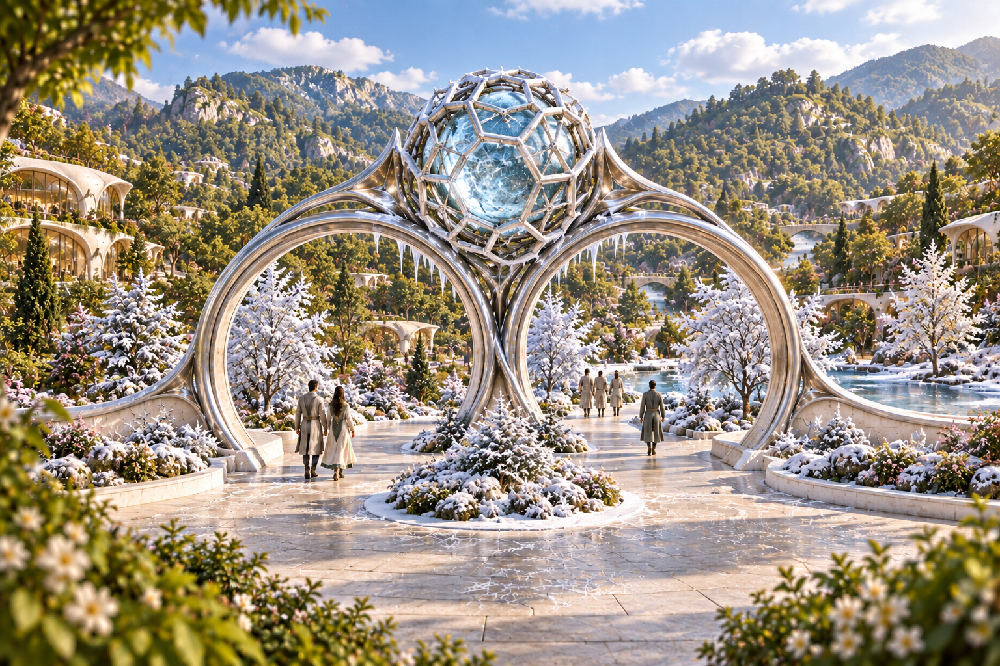
Closest to the brief: paired silver portals, central caged topaz, low white wall wings and a winter forecourt.
Strong jewelry identity and two clear passages; background is denser and more urban than the intended west meadow.
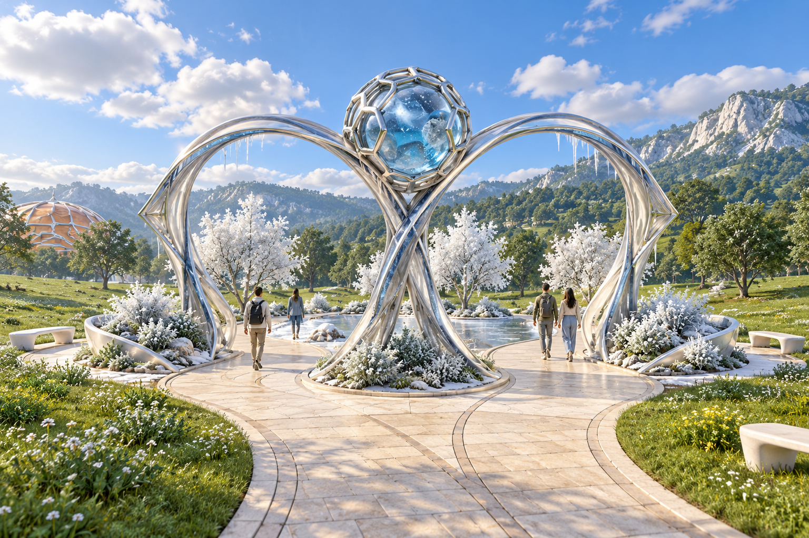
Lighter crossed silver ribbons, outward trumpet terminals and a small winter garden within the summer meadow.
Strongest figure-eight silhouette and a clear localized winter/summer boundary. Check actual ribbon splay and path rejoining in a later plan view.
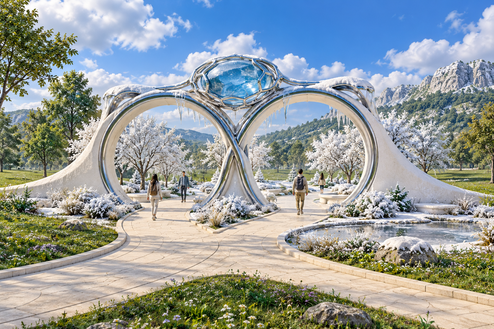
White masonry crescents with silver inner bands, a flatter topaz crown, seating and a side ice pool.
Strongest masonry/garden integration. Stone mass is heavier and silver less dominant than the brief; compare that tradeoff before choosing.
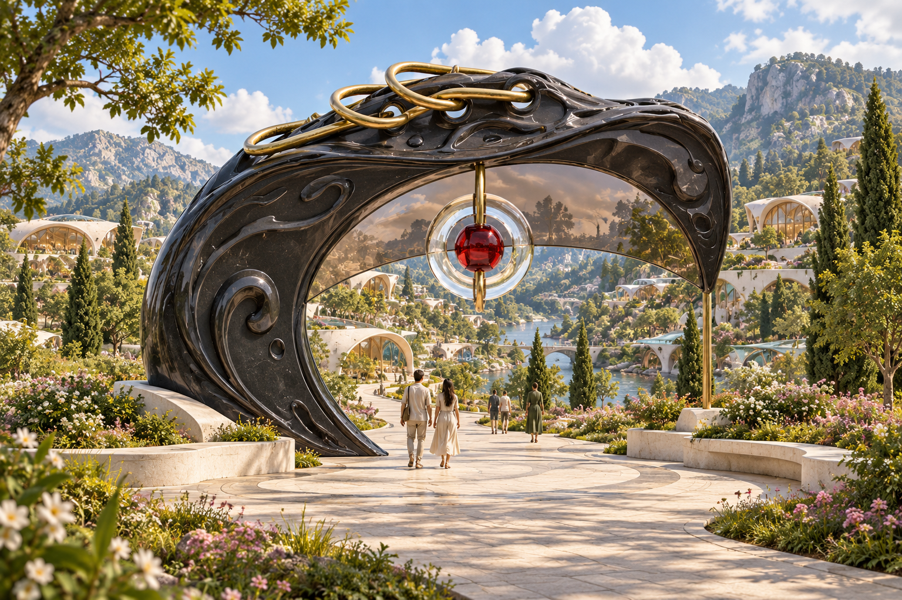
Closest to the pendant: black crescent, threaded brass loops, high tinted lens and a suspended glass ring with red bead.
Faithful color and motifs, with open lower passage. Right foot becomes a slender brass support and background is too urban for the planned site.
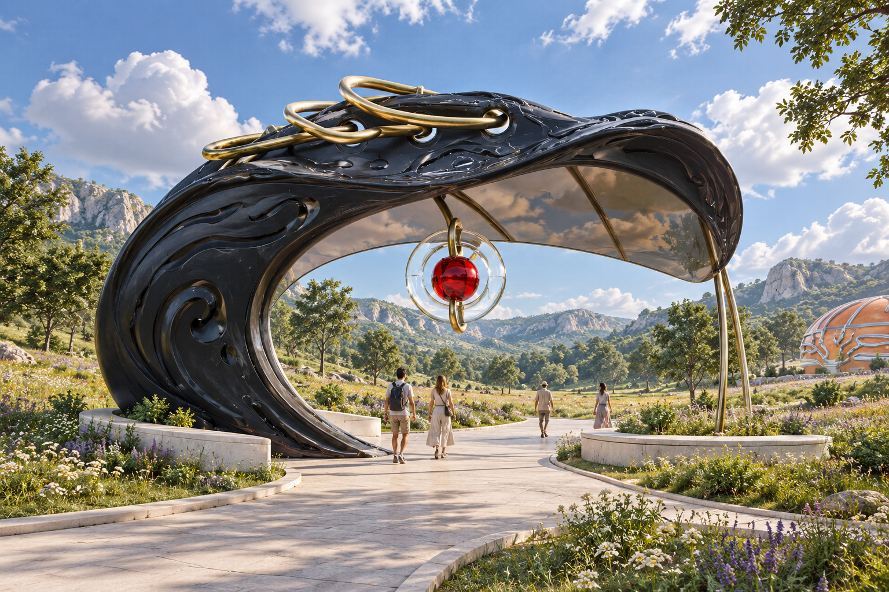
A deeper black curl with the tinted lens acting as a partial overhead canopy; a more sheltered threshold.
Lens reads as an overhead canopy and the meadow is clearer. Still close to A; right support is again brass, and the lens tint is fairly dark.
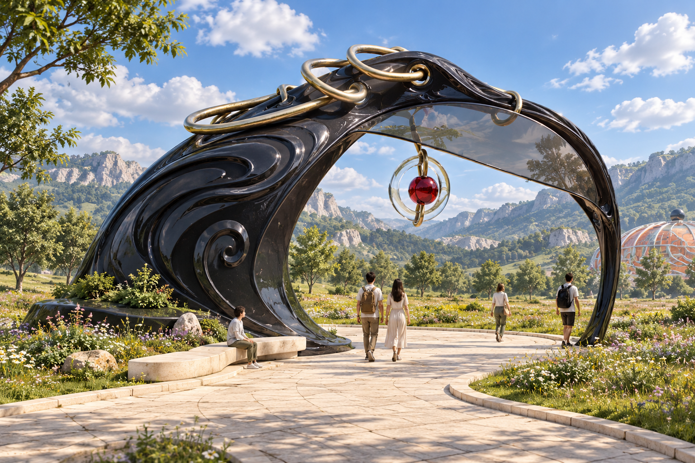
A flowing black arch with both feet in black, an overhead lens and a longer bench integrated with the heavier base.
Both structural feet read in black and seating belongs to the landmark. Most coherent complete Eyelense gate in this pass; camera remains more frontal than requested.